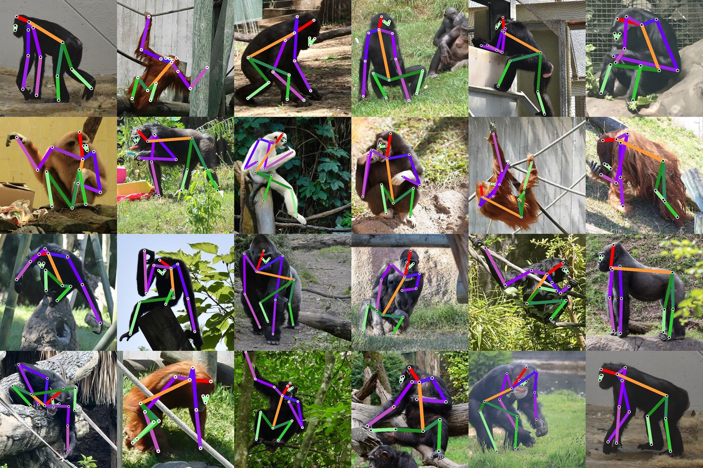
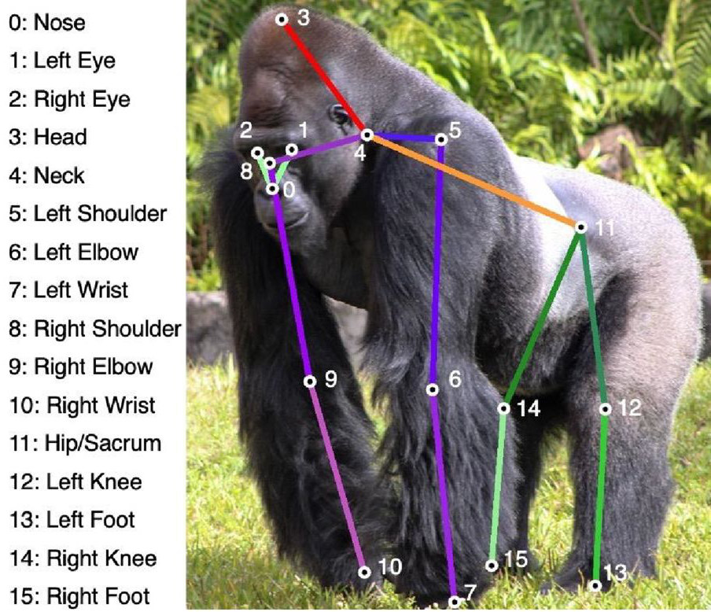
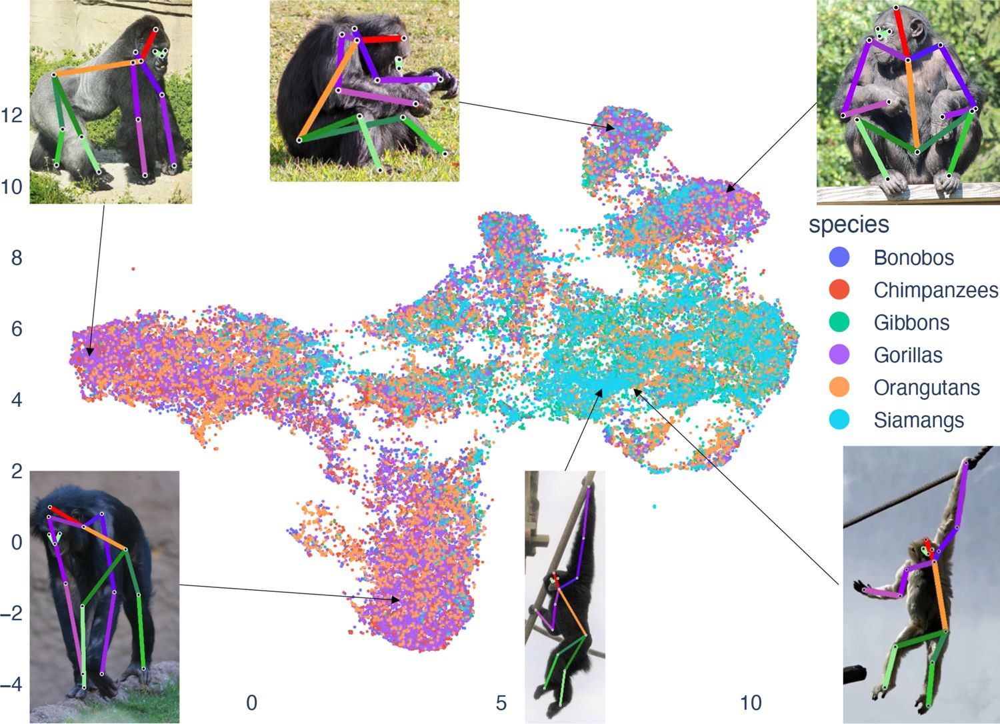
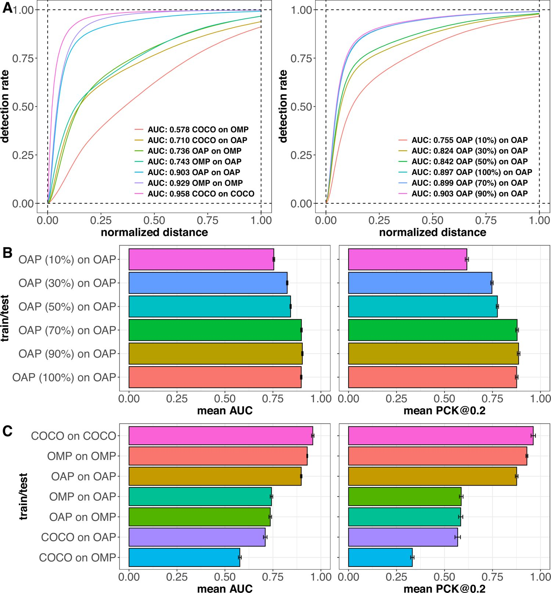

A borrowed skeleton
Pose tracking is software that looks at an ordinary photograph or video and marks where the body's joints are: here is the nose, here is the left elbow, here is the right knee. Nothing has to be attached to the animal. It has changed how behavior is studied, because a camera can now record how a body moves, frame by frame.
The software learns from examples. People mark the joints by hand on thousands of photographs, and a neural network learns to do the same on photographs it has not seen. That is why it works so well for people: there are hundreds of thousands of labeled photographs of people. It also works for mice and flies, whose bodies and surroundings are simple. But for apes, in 2022, there was no public dataset at all. If you wanted to track a chimpanzee, there was nothing you could download and run.
Apes are hard subjects. Their fur gives a camera little texture to hold on to. Their bodies take up a huge range of positions: sitting, knuckle-walking, hanging by one arm, folded up asleep. And they are hard to photograph in large numbers, because there are few of them in captivity and footage from field sites tends to be closely held.
Did anyone need an ape dataset? The hope at the time was no. Humans are apes, and monkeys are close relatives, so a model trained on people or on monkeys might work on apes too. That hope could be tested, but only with a large set of labeled ape photographs. So we built one, and we gave it away.
Where 71,868 photographs come from
The photographs show six kinds of ape: chimpanzees, bonobos, gorillas, orangutans, gibbons and siamangs. Most were taken at zoos in 25 cities across the United States and Canada, and at four sanctuaries. We took some of them ourselves. For zoos we could not reach, I hired about ten photographers who lived nearby, on short contracts. Several volunteers sent pictures too.
A smaller number came from public videos and photographs online, a use the university's legal office approved. And about 17,000 came from the lab's earlier monkey dataset, OpenMonkeyPose, which had included some apes.

We collected several hundred thousand images and threw most of them away. More than three quarters failed a check. Some were blurry. In some the animal was too small, or mostly hidden. And many were too much like a picture we already had, which was the check that mattered most. A thousand frames of a gorilla sitting still teach a model one thing a thousand times. A trained technician screened every photograph, and then I did. We kept the ones that added a pose, an angle or a background the set did not have yet.
A commercial annotation service then marked 16 landmarks on each animal (the nose, the eyes, the shoulders and so on), following written instructions that are published with the paper. We checked their work. From each batch of 10,000 images we drew five random samples of 100 and looked at every label, about 2,500 images in all. One batch had errors and went back to be redone.


Is the variety really there? The map on the right is one way to check. Gibbons and siamangs, which travel by swinging under branches, form their own clusters. The great apes, which spend more time on the ground, form another. Orangutans, the great apes that spend the most time in trees, sit across both.
The test
A dataset is only worth something if models trained on it work. So I trained six standard pose networks on it, using the MMPose library. The best was HRNet-W48, which had also been the best in the lab's earlier comparison on monkeys. It is the only network in the paper, because the paper tests the data and does not rank networks. The model learned from 60% of the photographs, and I scored it on another 20% that it had never seen.
Here is how the score works. A predicted landmark counts as correct if it falls close enough to where a person put it. How close is close enough? That is the tolerance, set as a fraction of the animal's size in the picture. At a tolerance of 20%, the model placed 88% of landmarks correctly. Averaged over every tolerance from strict to loose, it scored 0.90. That average is the number called AUC below.
Then came the comparison the project was built for. Could a model trained on other bodies do as well? I took the same network, trained on monkeys or on people, and scored it on the same ape photographs.
It could not. Neither relative was a good stand-in. The surprise is the order. The human model had almost five times as much training data as the monkey model, and humans are, biologically, apes. It still did slightly worse on apes than the monkey model did.
Being related does count for something. The human model was better at apes (0.71) than at monkeys (0.58). It just was not good at either.
Humans are apes. The model trained on humans did not seem to know it.
How good is 0.90? For comparison, the monkey model scores 0.93 on monkeys, and the human model scores 0.96 on people. So the ape model comes close to what the same network reaches on the bodies it was trained on, and sits a little behind both.

How much data is enough?
Would more photographs help? To find out, I retrained the model on random portions of the training set (10%, 30% and so on), keeping the mix of species the same.
Accuracy climbed until about 30,000 photographs and then went flat. The full set did no better than 70% of it. So for this network, more pictures of the same kind would not help. The next gain is more likely to come from a better model, or from a different kind of picture.
A species it never saw
The test above has a weakness. I split the photographs at random. That means pictures of the same animal in the same enclosure, taken minutes apart, can land on both sides of the split. A model can then look good just by recognizing a place.
So I ran a harder test. I trained six more models, each with one species removed completely, and scored each on the species it had never seen. Now the model and its test photographs shared no animals and no enclosures.
Accuracy (AUC) on a species held out of training
- Gibbon 0.827
- Chimpanzee 0.836
- Orangutan 0.839
- Siamang 0.848
- Bonobo 0.896
- Gorilla 0.896
Every model lost some accuracy on its missing species, as it should. Chimpanzees lost the most. Gibbons were the hardest overall, which matched our own experience: an animal hanging by one arm with its legs tucked up is hard for a person to label too. But every one of these models still beat the monkey-trained model on the species it had never seen. So close relatives do help. They do not replace pictures of the animal itself.

What it cannot do
- It knows zoos. Most photographs come from zoos and sanctuaries. A forest, with its shade, leaves and distance, is a different problem, and I did not measure how the model does there.
- It is flat. The dataset has single photographs, not synchronized views from several cameras, so it supports 2D tracking only.
- One animal per picture. Many photographs show several apes, but only one is labeled in each.
- No hands or faces. Sixteen landmarks describe the trunk and limbs. Gestures and facial expressions, which many primatologists care about most, are not there.
- One network in the published tests. The comparisons, the data-size test and the held-out-species test all use HRNet-W48. Another network might keep improving past 30,000 photographs.
Because the photographs are public, another group can fix any of these by adding labels or images, without starting again from nothing.
Building with OpenApePose
The photographs, the annotations, the trained models and the code are all public, and people I have never met have built on them.
One of them is Wim Pouw at Tilburg University. He combined the OpenApePose model with two other tools: a detector that finds the apes in each frame (OWLv2) and a tracker that follows each one from frame to frame (ByteTrack). The result is a small Python package, envisionboxbio-apetrack. You install it, point it at a video, and get a box, an identity and 16 landmarks for every ape in each frame, with no labeling or training of your own.
The work is his. My part was the model, which was there for him to pick up, and he kindly listed me as a co-author. For the package he also reposted the model on Zenodo in a newer file format, converted but not retrained. The package has not yet been formally evaluated, and it struggles with distant or overlapping animals. Its demo page shows it running on zoo footage of gibbons and on field footage of wild chimpanzees, a setting the dataset barely covers.
For me, the limits above set the next project. A flat dataset of single animals could not measure how an infant monkey moves through space. So at Emory I built a system that could: twelve synchronized cameras and a 3D pose model.
Get it. Paper: eLife 12:RP86873 (2023). Full dataset and trained models: Dryad, in the public domain. Code: github.com/desai-nisarg/OpenApePose. The model as converted for envisionboxbio-apetrack, posted by Wim Pouw: Zenodo.
With Praneet Bala, Rebecca Richardson, Jessica Raper, Jan Zimmermann and Benjamin Hayden (principal investigator), at the University of Minnesota and Emory University. Thanks to the zoos and sanctuaries that let us photograph, including the Chimpanzee Conservation Center, Project Chimps, Chimp Haven and the Ape Initiative, and to everyone who contributed pictures.
Figures and numbers are from Desai et al. (2023), eLife 12:RP86873, used under CC BY 4.0. The landmark image is cropped from Figure 2; the bar charts are redrawn from the paper's numbers.